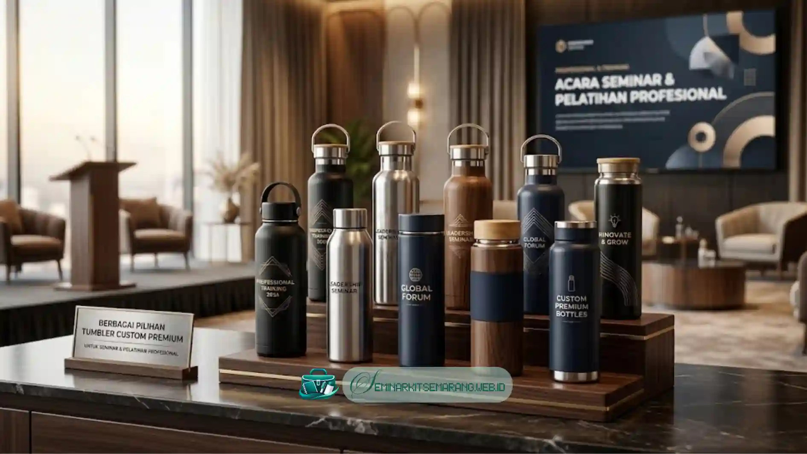

Mengapa Tumbler Tetap Jadi Pilihan Utama?
Dibandingkan merchandise lain, tumbler custom memiliki tingkat pemakaian ulang tertinggi. Peserta seminar yang menerima tumbler berkualitas akan menggunakannya berulang kali - di kantor, di gym, bahkan saat perjalanan Setiap kali digunakan, logo instansi Anda ikut terlihat oleh orang di sekitarnya.
Ini menjadikan tumbler sebagai instrumen brand awareness berjalan yang paling cost-effective. Bayangkan 100 peserta seminar menggunakan tumbler setiap hari selama setahun - berapa kali logo Anda dilihat orang?
5 Tren Tumbler Custom Terpopuler di 2026
1. Tumbler dengan Indikator Suhu Digital
Smart tumbler dengan layar LED suhu kini makin terjangkau dan jadi standar eksekutif. Produk fungsional ini direkomendasikan sebagai item unggulan Paket VIP untuk acara eksklusif Anda.
2. Material Bambu dan Gabus Alami
Tren penggunaan eco-friendly tumbler dari bambu atau gabus kini semakin meningkat. Tampilan naturalnya mampu menjadi pernyataan kuat atas komitmen instansi Anda terhadap pelestarian lingkungan.

3. Tumbler dengan Desain Motif Batik
Tumbler dengan ornamen sentuhan batik lokal makin diminati untuk berbagai acara formal. Produk custom ini amat populer di kalangan instansi yang ingin mengedepankan nilai-nilai keindonesiaan.
4. Tumbler Silinder Sleek (Minimalis)
Desain silinder minimalis dengan balutan warna solid memancarkan kesan yang jauh lebih premium. Gaya bersih dan berkelas ini sangat kami sarankan untuk melengkapi suvenir Paket Standar.
5. Tumbler Insert Paper
Model insert paper hadir sebagai alternatif ekonomis yang memberi kebebasan kreativitas tanpa batas. Kertas desain dicetak full color dan dimasukkan merata ke dalam lapisan transparan pelindungnya.
Tips Memilih Tumbler Custom yang Tepat
- Kapasitas: 500ml adalah ukuran paling populer dan nyaman dibawa kemana-mana.
- Material Dalam (Food Grade): Pastikan bebas BPA untuk keamanan pengguna.
- Ketahanan Suhu: Tumbler vacuum double-wall menahan panas 8-12 jam dan dingin 24 jam.
- Metode Branding: Sablon, UV printing, atau laser engrave  masing-masing memiliki ketahanan berbeda.
Siap Memesan Tumbler Custom?
Kami siap memproduksi tumbler custom variatif dengan minimal order cukup 50 pcs. Hubungi kami sekarang untuk layanan konsultasi desain secara gratis bersama tim ahli!